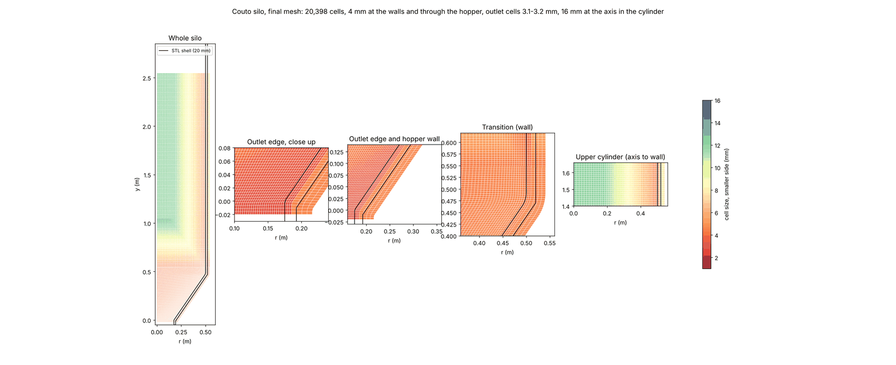
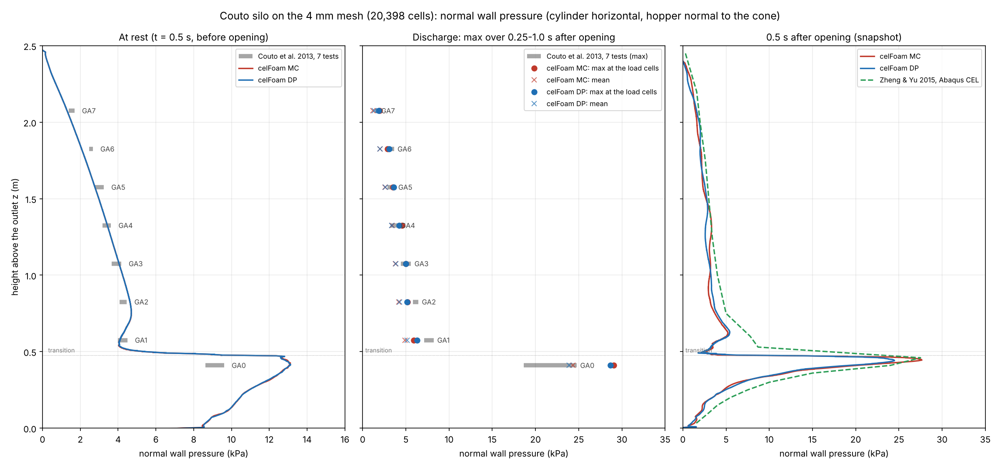
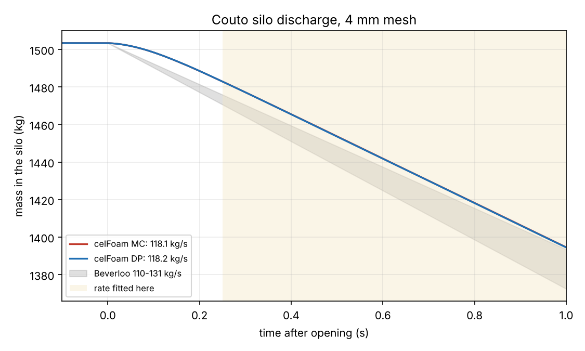
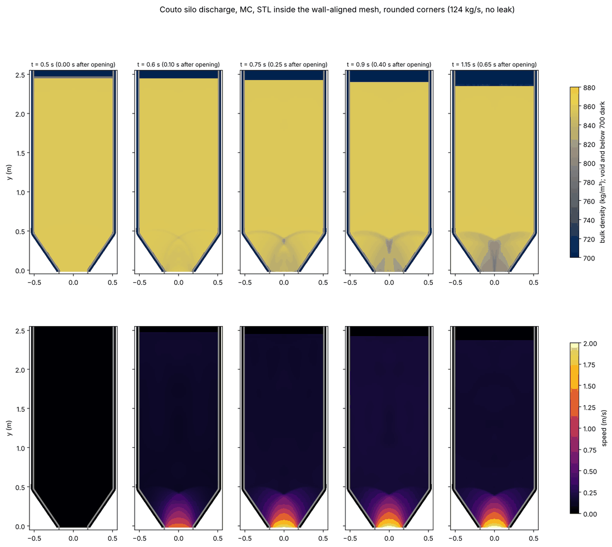

Validation cases
How well celFoam reproduces experiments, closed-form solutions and other solvers: silo and hopper discharge, wall pressures, granular collapse and flow, cohesion, footings, piles, impact, and the parallel and restart machinery. Each case names the test in the repository that reproduces it.
"CI" tests run automatically on every change; "manual" tests are in tests/manual/
because they take too long. Unless stated, the granular material is the T0 placeholder:
cohesionless Mohr-Coulomb, \(\rho = 1800\) kg/m³, \(\varphi = 35^\circ\), \(\nu = 0.3\), with the
T0 rule set and 10 mm cells.
Couto silo: wheat in a conical-hopper silo
The main validation case. Couto et al. 2013 measured the wall pressures of wheat in a 1 m steel silo with a 34.3° conical hopper and a 0.35 m outlet, at eight load cells (GA0 on the hopper, GA1 to GA7 up the cylinder), at rest and during discharge. Zheng and Yu 2015 ran the same silo in Abaqus/Explicit CEL. celFoam runs it on the axisymmetric wedge with the wheat's published values: \(\rho = 856\) kg/m³, \(E = 10.67\) MPa, \(\nu = 0.3\), \(\varphi = 30.2^\circ\), \(c = 0\), \(\psi = 1^\circ\), wall friction 0.20.
Setup (final runs, decision 0117): the wall-aligned wedge mesh with an STL shell inside it and rounded
corners (Meshing), 20,398 cells: 4 mm at the walls and through the
hopper, 3.1 to 3.2 mm at the outlet, 12 mm rows in the upper cylinder, 16 mm at the axis. T0 rules plus
fullBlend and the nonlocal fluidity (\(A = 0.48\), \(d = 4\) mm), gravity-on start, outlet
opened at 0.5 s, run to 1.5 s. Mohr-Coulomb and Drucker-Prager (plane-strain fit), each about 8 hours on
four cores (tests/hopper/run_final_4mm.sh, which writes checkpoints and resumes after an
interruption; comparison: tests/hopper/final_report.py).

What is compared, as the papers report it: Couto's load cells measure the normal wall pressure (horizontal on the cylinder; normal to the cone for GA0), and the discharge rows of their Table 1 are the maximum during discharge, so celFoam's largest value over the writes 0.25 to 1.0 s after opening is compared with them (the mean is shown too). Zheng and Yu's Fig. 11 is one snapshot 0.5 s after opening, compared with celFoam at the same time.


| Quantity | Reference | celFoam MC / DP | Status |
|---|---|---|---|
| Discharge rate | Beverloo, 110 to 131 kg/s | 118.1 / 118.2 kg/s | pass |
| Peak at the transition, 0.5 s after opening | Abaqus CEL 27.5 kPa at z 0.46 m | 27.7 kPa at 0.45 m / 24.5 kPa at 0.44 m | pass (MC within 1 %, DP 11 % low) |
| At rest, cylinder GA1 to GA5 | Couto 2.8 to 4.5 kPa | 4.10, 4.64, 4.04, 3.45, 2.79 kPa (both) | pass (GA2 4 % above the range) |
| At rest, upper cylinder GA6, GA7 | 2.47 to 2.66 and 1.39 to 1.69 kPa | 2.08 and 1.30 kPa | 16 % and 6 % low |
| At rest, hopper GA0 | 8.6 to 9.6 kPa | 13.0 kPa (both) | known gap: 36 % high |
| Discharge maximum, GA0 | Couto 18.7 to 24.8 kPa | 29.0 / 28.7 kPa (mean 24.3 / 23.9) | 17 % above Couto, as Abaqus (27.5) |
| Discharge maximum, GA1 and GA2 | 7.1 to 8.2 and 5.8 to 6.5 kPa | GA1 5.9 / 6.3, GA2 5.2 / 5.1 kPa | 11 to 17 % low |
| Discharge maximum, GA3 to GA7 | Couto, 1.4 to 5.6 kPa | GA3, GA5 inside; GA4 +14 / +5 %; GA6 −14 / −8 %; GA7 +12 / +6 % | within 15 % |
| Leak through the STL wall | none | 0 kg at every write | pass |
Summary: the discharge rate and the Abaqus peak are matched, the cylinder pressures at rest are in the measured range, and every discharge load cell is within 17 % of the experiment's maximum, inside the 20 % the project accepts for discharge. The one clear gap is the hopper wall at rest (GA0, 36 % high with the gravity-on start; it was 20 to 25 % high on coarser meshes): the start has no filling history, which in the experiment leaves a lower stress on the hopper wall. Mohr-Coulomb and Drucker-Prager (plane-strain fit) agree closely everywhere except the transition peak.

What was learned (decisions 0102 to 0117): the outlet cell size sets the rate (21 kg/s with uniform 25 mm cells, 106 with 3 to 5 mm outlet cells, 123.8 with rounded corners and the STL shell on 7,584 cells, 118 with the nonlocal law on the 4 mm mesh); Drucker-Prager must use the plane-strain fit; filling from the top raises the wall pressures unless the locked-in sideways stress is relaxed; and refining the cylinder to 4 mm moves GA1 and GA2 little, so the remaining discharge deficit there is not a resolution effect (Abaqus is also low at GA2).
Benchmark summary
| # | Benchmark | Reference | Result | Status | Test |
|---|---|---|---|---|---|
| 1 | Silo discharge (T0 tank), rate across \(E\) = 0.1, 1, 10 MPa | Beverloo | 65.8 / 52.0 / 60.8 kg/s/m (\(C\) = 0.79 / 0.63 / 0.73) | about 20 % spread with \(E\) (accepted) | CI test_discharge.sh |
| 2 | Settled tank, wall stresses | Janssen | within 1.7 %, \(K\) = 0.424 | pass | CI test_silo_settle.sh |
| 3 | Steady inclined layer, 31° | Bagnold profile of \(\mu(I)\) | profile error 3.6 / 0.9 / 0.8 % at \(E\) = 0.1 / 1 / 10 MPa | pass | CI test_inclined_layer.sh |
| 4 | Column collapse, aspect ratio 0.5 and 2 | Lube et al.; Lajeunesse et al. | run-out 0.40 / 1.70 (1 MPa), 0.30 / 1.30 (10 MPa) | pass (low in the band) | manual test_collapse_mui.sh |
| 5 | Cohesive silo: arching over the outlet | Jenike critical width 109 / 55 mm | stops at 80 / 100 mm, flows at 120 / 140 mm (\(c\) = 500 Pa) | pass | CI test_cohesion.sh |
| 6 | Tank with STL walls | same tank with mesh walls | +4.4 % | pass | CI test_stl_silo.sh |
| 7 | Strip footing on Tresca clay | Prandtl, \(N_c = 2+\pi\) | −8.1 % (10 cells across), −1.9 % (20 cells) | pass | CI test_footing.sh |
| 8 | Strip footing on sand, \(\varphi = 30^\circ\) | Martin, \(N_\gamma = 7.65\) | high, falls with push speed | known issue | manual test_sand_footing.sh |
| 9 | Pile section through clay, smooth | Randolph and Houlsby, 9.14 | 9.29 (+1.7 %) | pass | CI test_pile.sh |
| 10 | Pile section, rough | Randolph and Houlsby, 11.94 | 11.26 (−5.7 %) at 5 mm | pass | CI test_rough_pile.sh |
| 11 | Taylor bar, hex8 bodies (3D quarter) | Abaqus benchmark: 13.10 mm shortening | 13.14 mm (+0.3 %), widening +4.2 % | pass | CI test_taylor_bar.sh |
| 12 | Taylor bar, Eulerian on the wedge | Abaqus axisymmetric: 13.11 mm | 13.02 mm (−0.7 %); lip widening smeared (−16 %) | pass | CI test_taylor_wedge.sh |
| 13 | Silo fed from the top while it discharges | unfed rate, mass balance | outflow within 3 %; balance \(4\times10^{-14}\) | pass | CI test_fed_silo.sh |
| 14 | Round silo on the wedge against a 3D quarter model | each other | \(C\) 0.678 against 0.680 | pass | CI test_wedge_silo.sh |
| 15 | Steel slug into clay | rigid slug; Prandtl energy estimate | deformable within 0.3 % of rigid; both 15 % short of the estimate | known issue | CI test_projectile.sh |
| 16 | Deformable footing (steel hex8) | the same footing rigid | force −3 % | pass | CI test_deformable_push.sh |
| 17 | Free body dropped onto a deposit | its weight | force/weight 1.0000 | pass | CI test_free_body.sh |
| 18 | Parallel runs with bodies (1, 2, 4 processors) | serial run | \(5\times10^{-15}\) over 100 steps | pass | CI test_mpi_bodies.sh |
| 19 | Restart | continuous run | identical bit for bit | pass | CI test_restart.sh |
Silo discharge and wall pressure
Discharge rate. A silo empties at a rate that does not depend on the fill height. The Beverloo correlation Beverloo et al. 1961 gives, for a round outlet of diameter \(D\) (with the empty annulus correction \(k\,d\) ignored for \(D \gg d\)),
$$W = C\,\rho\,\sqrt{g}\,D^{5/2},\qquad C \approx 0.55\ \text{to}\ 0.65,$$and for a slot of width \(D\), per unit length, \(W = C\rho\sqrt g D^{3/2}\). Continuum \(\mu(I)\) simulations reproduce it Staron et al. 2014. Hoppers flow faster than flat-bottomed silos by a factor that grows as the hopper steepens Nedderman 1992.
Wall pressure at rest. In a tall silo the walls carry part of the weight by friction, so the vertical stress saturates with depth Janssen 1895 Sperl 2006. For a round silo of radius \(R\), with wall friction \(\mu_w\) and lateral stress ratio \(K\),
$$\sigma_v(z) = \frac{\rho g R}{2K\mu_w}\Big(1 - e^{-2K\mu_w z/R}\Big),\qquad p_w = K\sigma_v ;$$for a 2D slot of width \(W\) replace \(R/2\) by \(W/2\) and \(2K\mu_w z/R\) by \(2K\mu_w z/W\). The settled T0 tank matches it within 1.7 % with \(K = 0.424\), close to \(1 - \sin\varphi\) Jaky 1944.
Granular flow and collapse
Inclined layer. A layer flowing steadily down a rough slope of angle \(\theta\) has the Bagnold velocity profile Bagnold 1954, which follows in closed form from the \(\mu(I)\) law GDR MiDi 2004 Jop et al. 2005:
$$u(z) = \frac{2}{3}\,\frac{I_\theta}{d}\sqrt{\phi_s g\cos\theta}\;\Big(h^{3/2} - (h-z)^{3/2}\Big),\qquad I_\theta = I_0\,\frac{\tan\theta - \mu_s}{\mu_2 - \tan\theta},$$with layer depth \(h\) and solid fraction \(\phi_s\). celFoam reproduces it within 5 % at every stiffness tested.
Column collapse. A column of grains released on a rough floor spreads to a run-out that depends on its aspect ratio \(a\) Lube et al. 2005 Lajeunesse et al. 2005. celFoam lands low in the experimental band. With a local friction law the run-out grows on finer meshes (0.30, 0.33, 0.43 at 10, 5, 2.5 mm); the nonlocal law makes the body of the deposit converge, leaving a thin toe (decision 0111).
Cohesion
A cohesive material arches over an outlet narrower than a critical width and flows through a wider one
Jenike 1964; celFoam brackets Jenike's width for
\(c\) = 250 and 500 Pa. A cohesive column with a free face stands or fails within Terzaghi's limits for the
critical height Terzaghi 1943, on three meshes,
with Mohr-Coulomb and Drucker-Prager (CI test_vertical_cut.sh).
Footings, piles and impact
Footing on clay. A rigid strip footing pushed into undrained (Tresca) clay of strength \(s_u\) fails at \(q = N_c s_u\) with \(N_c = 2+\pi\) Prandtl 1921; celFoam is 2 % low with 20 cells across the footing.
Footing on sand. The exact \(N_\gamma\) for \(\varphi = 30^\circ\) is 7.65 Martin 2005. celFoam reads high, and the excess falls as the push slows: it is a numerical rate effect of order \(\rho c v\) from the Riemann solver (decision 0095). Treat quasi-static bearing loads on frictional material as upper estimates.
Pile section. A rigid circle moving through clay meets a limiting resistance of 9.14 \(s_u\) (smooth) to 11.94 \(s_u\) (rough) per unit length Randolph and Houlsby 1984; celFoam is within 2 % (smooth) and 6 % (rough, with wall adhesion).
Taylor bar. A copper rod hitting a rigid wall Taylor 1948, against the Abaqus benchmark solution: both the hex8 bodies and the Eulerian wedge get the shortening within 1 %. The Eulerian wedge smears the thin lip at the impact face (first order in the cell size); use a Lagrangian body for thin flanges.
Verification underneath
- Material models: C++ against the Python reference to \(10^{-12}\) to \(10^{-15}\) on hundreds of strain paths.
- Elastic waves at 0° and 45° to the mesh: order 1.8 to 2.1, speeds within 0.2 %; rigid rotation 0.11 % per turn.
- Free surface: lake at rest to \(2.5\times10^{-17}\) m/s, free fall at \(g\), a translating block with exact edges.
- Wedge: Lamé cylinder within 0.9 %, round Janssen silo within 2 %.
- Angled cells: a column on leaning cells at the closed-form stress; collapse on cells leaning both ways within 3 cells of the Cartesian run.
- Hex8: patch test to \(10^{-15}\), bar wave within 0.3 %, energy to \(10^{-7}\).
- Cut cells: covered volumes exact to \(4\times10^{-16}\).
Cost
About 4 µs per cell per step on one core with the T0 rule set. Four processors run 2.6 to 3.3 times faster than one. The 2D tank discharge of the quick start (2,480 cells, 2.3 s) takes about 11 minutes on one core; the Couto silo on the wedge takes about 2 to 4 hours on four with 7,584 cells (3 to 5 mm outlet cells) and about 8 hours with the final 20,398-cell mesh.